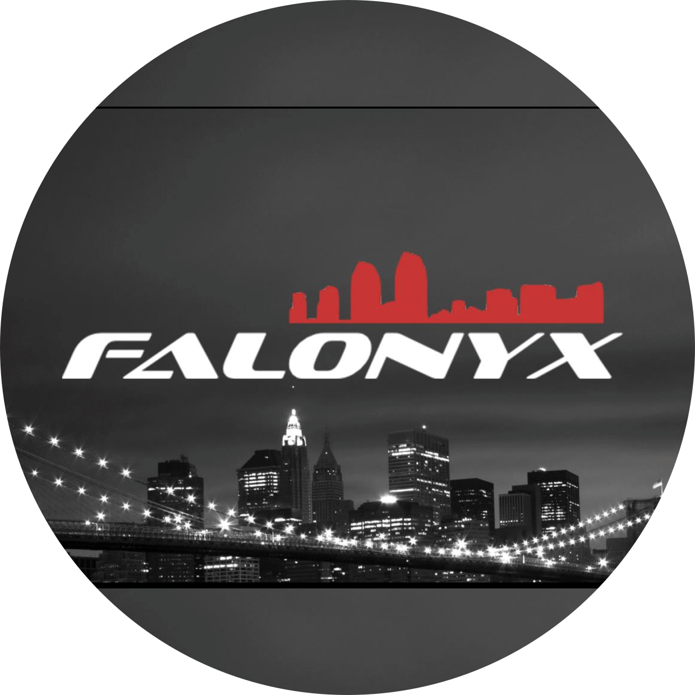

I BUILD THINGS ON THE INTERNET
An old friend of mine recently asked me a question
"Are you still building things on the Internet?"
It then struck me that one of my favorite hobbies is creating apps, websites & games.
I was left inspired and so I compiled a list of projects I have built/am involved with currently. Here are a few:
StudentAve
StudentAve helps you form productive relationships in your college community. Whether you're offering a carpool, a service, or a lesson - we make it easy to find people and make arrangements.
View Product »
STAT90
Dive deep into the Game of World Football. At STAT90, we analyze games with Data Science and AI to provide intersting insights and predictions.
View Product »
Synapse
Synapse penetrates your web content into a distributed Torrent Network which eliminates the need of having a centralized web server.
View Product »Angry Saibamen
An extremely addictive game for all DragonBall Z Fans! Built for Windows with C++.


The Football Chronicle
TFC was an Online Magazine which delivered Football News (Soccer) to around 220,000 people in India & the UK.


The Falonyx Foundation
A software company that helped small businesses in New Delhi to gain a presence on the Internet.